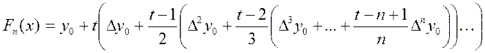
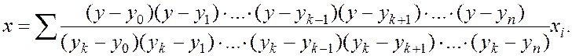

Субтабуляція таблиць функцій та обернене інтерполювання
Інтерполювання можна застосовувати для ущільнення заданої таблиці функцій, тобто, обчислення та даною таблицею значень функції нової таблиці із більшою кількістю значень аргументу . Цю операцію іноді називають субтабуляцією функції. У випадку, коли початкова таблиця є таблицею із сталим кроком, зручно використовувати інтерполяційний поліном Ньютона. При заданій кількості вузлів для розрахунків на ЕОМ формули Ньютона зручно записувати за схемою Горнера. Так, перша інтерполяційна формула Ньютона може бути такою:

Використання схеми Горнера дозволяє обчислювати значення в циклі. Якщо максимальний порядок скінчених різниць, які використовуються для обчислення, невисокий для обчислення , то можна використовувати формули Ньютона в стандартному вигляді.
Розглянемо ще один випадок практичного застосування інтерполяційних формул. Досить часто виникає ситуація, коли відоме значення функції, а потрібно знайти значення аргументу, яке відповідає даному значенню функції . Ця задача називається задачею оберненого інтерполювання. Якщо функція  строго монотонна (зростаюча або спадна) на заданій ділянці таблиці, то для неї існує обернена монотонна (зростаюча або спадна) функція У цьому випадку обернене інтерполювання зводиться до звичайного інтерполювання для оберненої функції При цьому значення вважаються значеннями аргументу, а значення - значеннями функції Але табличні різниці функції
строго монотонна (зростаюча або спадна) на заданій ділянці таблиці, то для неї існує обернена монотонна (зростаюча або спадна) функція У цьому випадку обернене інтерполювання зводиться до звичайного інтерполювання для оберненої функції При цьому значення вважаються значеннями аргументу, а значення - значеннями функції Але табличні різниці функції  не зберігають сталих значень (значення не рівновіддалені), тому для оберненого інтерполювання зручно використовує інтерполяційний многочлен Лагранжа. У цьому випадку він набуває вигляду:
не зберігають сталих значень (значення не рівновіддалені), тому для оберненого інтерполювання зручно використовує інтерполяційний многочлен Лагранжа. У цьому випадку він набуває вигляду:

Якщо функція не монотонна, то для неї записують інтерполяційний многочлен Ньютона або Лагранжа, а потім розв’язують рівняння відносно для заданого . Це рівняння здебільшого розв’язують методом ітерацій, який при виконанні умов збігається, а різниці
вищих порядків 
, малі порівняно з